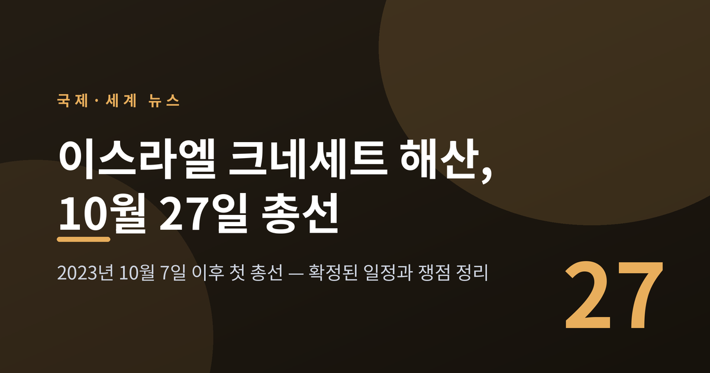
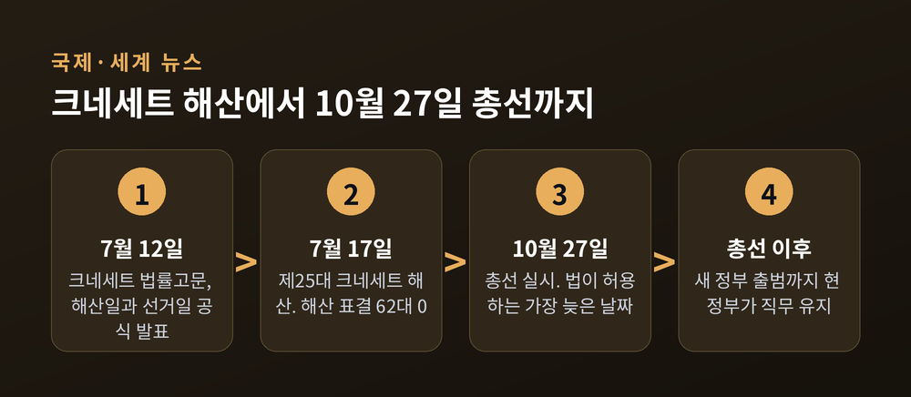
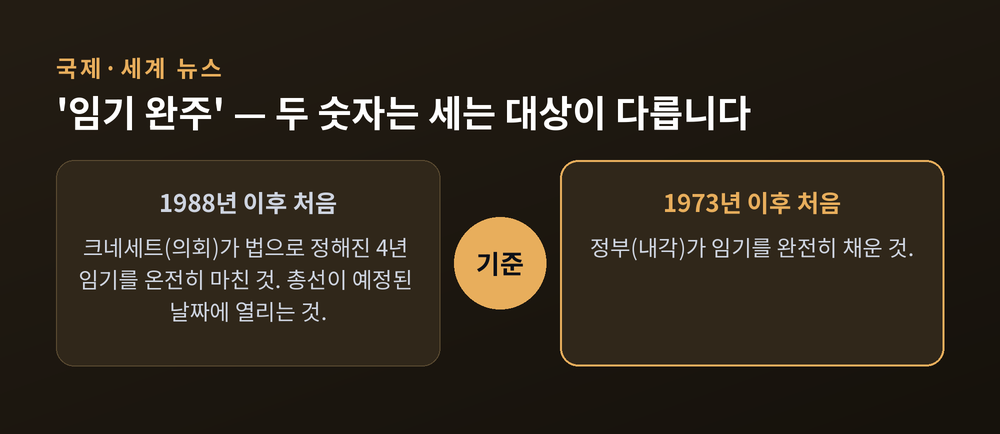
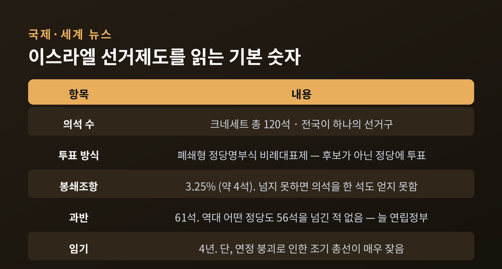
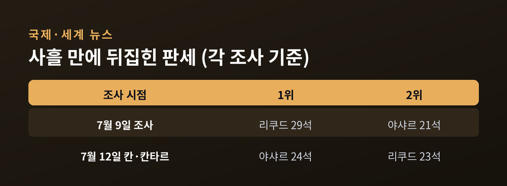
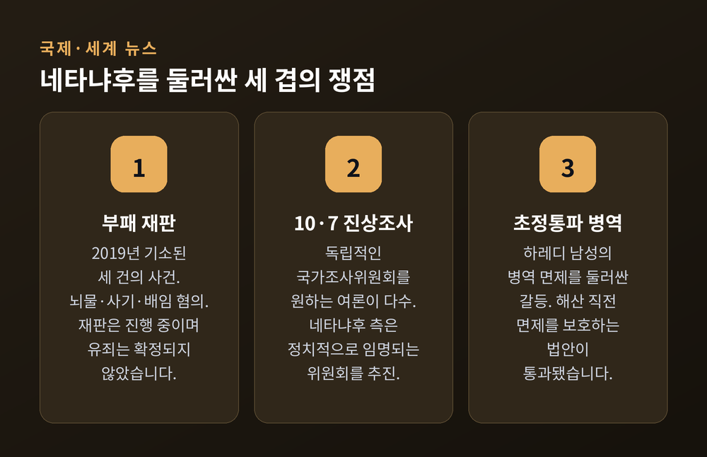
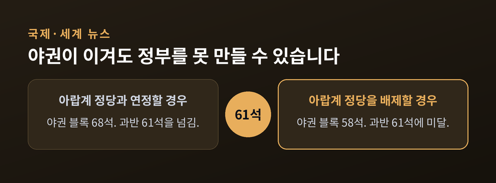

이번 글에서는 7월 17일 이스라엘 크네세트 해산과 10월 27일 총선 확정을 정리해 보겠습니다. 2023년 10월 7일 이후 처음 치러지는 총선입니다. 무슨 일이 있었고, 왜 중요하며, 무엇이 쟁점인지 순서대로 짚어보려 합니다.
먼저 세 줄로 요약하겠습니다. 이스라엘 의회 크네세트가 7월 17일 임기 만료로 해산됐습니다. 총선은 법이 허용하는 가장 늦은 날짜인 10월 27일에 실시됩니다. 네타냐후 연립정부는 수십 년 만에 4년 임기를 모두 채운 정부가 됐습니다.
현지시간 7월 17일 제25대 크네세트가 공식 해산됐습니다. 해산 표결은 62대 0으로 승인됐습니다. 네타냐후 총리 본인도 찬성표를 던졌습니다. 연립여당 의원들을 중심으로 이뤄진 표결이었습니다. (JNS·하아레츠 2026년 7월 17일 보도 기준)
해산에 앞서 의회는 밤샘 마라톤 표결을 열었습니다. 국영방송 칸(Kan)에 따르면 이때 통과된 법안 가운데 하나가 정당 자금 지원법입니다. 정당들이 선거운동에 쓸 국가 규제 자금을 풀어주는 법입니다. 이 법이 통과되면서 10월 27일이라는 선거일이 법적으로 확정됐습니다.
여기서 한 가지 오해를 풀어야 합니다. 이번 해산은 '조기 해산'이 아닙니다.
크네세트 법률고문 사기트 아픽은 7월 12일 이렇게 밝혔습니다. "크네세트가 7월 17일에 해산된다. 선거는 법이 허용하는 가장 늦은 날짜인 10월 27일 실시될 것이다." 아픽은 현재 크네세트가 임기를 모두 마치는 것이며 조기에 해산되지 않는다고 설명했습니다. 임기 만료에 따른 자연스러운 해산인 셈입니다.
새 의회와 정부가 출범할 때까지는 현 정부와 의회가 직무를 유지합니다. 다만 이 기간 권한은 통상 일상적인 국정 운영으로 제한됩니다.

이 대목이 이번 뉴스의 핵심입니다. 그런데 매체마다 기준 연도가 다르게 보도됩니다. 조심해서 읽으셔야 합니다.
알자지라(로이터)는 크네세트가 법으로 정해진 4년 임기를 온전히 마친 것이 1988년 이후 처음이라고 전했습니다. 타임스오브이스라엘과 국내 매체들은 총선이 예정된 날짜에 열리는 것이 1988년 이후 처음이라고 보도했습니다. 반면 정부, 즉 내각이 임기를 완전히 채운 것은 1973년 이후 처음이라는 서술도 있습니다.
모순이 아닙니다. 세는 대상이 다를 뿐입니다.
1988년은 의회와 선거일을 기준으로 한 숫자입니다. 1973년은 정부를 기준으로 한 숫자입니다. 두 숫자가 함께 가리키는 사실은 하나입니다. 이스라엘에서 정부가 임기를 다 채우는 일은 대단히 드물다는 것입니다.
이유는 구조에 있습니다. 이스라엘은 연립정부가 조기에 무너지고 스냅 총선으로 이어지는 일이 잦습니다. 2019년부터 2022년 사이에만 다섯 차례 총선을 치렀습니다. 예전엔 임기 완주가 당연한 일로 여겨지지 않았습니다. 지금은 그 드문 일이 실제로 일어났습니다.
네타냐후 정부는 2022년 12월 29일 출범한 제37대 정부입니다. 2023년 10월 7일 전쟁이 발발하면서 전시 내각을 꾸렸고, 그 상태로 4년을 채우게 됐습니다.

이스라엘 선거를 이해하려면 숫자 몇 개를 알아두시면 좋겠습니다.
크네세트 의석은 모두 120석입니다. 전국이 하나의 선거구이고, 폐쇄형 정당명부식 비례대표제를 씁니다. 유권자는 후보 개인이 아니라 정당에 투표합니다. 임기는 4년입니다.
봉쇄조항은 3.25%입니다. 2014년 3월 크네세트가 문턱을 3.25%로 올렸습니다. 의석으로 환산하면 약 4석에 해당합니다. 이 문턱을 넘지 못하면 한 석도 얻지 못합니다.
과반은 61석입니다. 한 정당이 61석 이상을 얻으면 단독으로 정부를 구성할 수 있습니다. 그러나 이스라엘 역사상 어떤 정당도 총선에서 56석을 넘긴 적이 없습니다. 그래서 언제나 연립정부가 필요했습니다.
이 구조가 이스라엘 정치의 성격을 결정합니다. 군소정당이 캐스팅보트를 쥡니다. 연정 안의 이견 하나가 정부를 무너뜨립니다. "3.25% 문턱과 61석 과반" — 이 두 숫자가 이스라엘 정치를 읽는 열쇠입니다.

여론조사 이야기를 하겠습니다. 다만 수치를 그대로 믿지 마시길 권합니다. 조사기관과 시점에 따라 결과가 크게 흔들리기 때문입니다.
7월 9일 조사에서는 리쿠드가 29석으로 1위, 가디 아이젠코트가 이끄는 야샤르가 21석으로 2위였습니다. (하아레츠·i24NEWS 보도 기준)
그런데 7월 12일 칸·칸타르 조사에서는 결과가 뒤집혔습니다. 야샤르 24석, 리쿠드 23석입니다. 야샤르가 처음으로 리쿠드를 앞선 조사입니다. 18세 이상 551명을 대상으로 한 조사였습니다.
사흘 사이에 순위가 바뀐 셈입니다. 어느 쪽이 맞다고 단정하기 어렵습니다. 편차가 크다는 사실 자체가 지금 이스라엘 표심의 상태를 보여준다고 생각합니다.
같은 칸 조사에서 네타냐후 블록은 52석, 야권 블록은 68석으로 집계됐습니다. 알자지라(로이터)도 칸 조사를 인용해 리쿠드가 야권에 뒤지고 있으며 네타냐후 블록이 61석 과반에 크게 못 미친다고 전했습니다.
가디 아이젠코트는 이스라엘방위군 참모총장을 지낸 인물입니다. 신생 중도 정당 야샤르를 창당했습니다. 알자지라는 그를 네타냐후에 대한 가장 큰 위협으로 지목했습니다. 전 총리 나프탈리 베네트도 투게더당을 이끌고 경쟁에 나섰습니다.
크네세트 해산 직후 세속 우파 지도자 아비그도르 리베르만은 이렇게 선언했습니다. "10월 27일, 우리는 승리할 것이다. 우리는 정부를 교체하고 나라를 재건할 것이다."
여당 쪽 입장도 함께 보셔야 균형이 맞습니다. 리쿠드당은 6월 10일 "네타냐후는 다가오는 선거에 출마할 것이며 신의 도움으로 승리할 것"이라고 밝혔습니다. 네타냐후 본인은 6월 28일 "이스라엘에는 폭넓은 기반을 갖춘 거국 정부가 필요하며 나는 그런 내각을 구성할 것"이라고 예고했습니다. 우파 중심 연정을 넘어 좌우 진영을 아우르겠다는 구상입니다.

이번 선거의 쟁점은 크게 세 갈래로 나뉩니다.
첫째, 지지율과 전쟁 평가입니다. 예루살렘 히브리대학교가 6월 21일 발표한 조사에서 네타냐후 지지율은 29.4%였습니다. 3월 초 40.5%에서 크게 내려온 수치입니다. 같은 조사에서 응답자의 92% 이상이 "최근 중동 전쟁에서 이란이 승리했다"고 답했습니다. 어디까지나 히브리대 조사 기준입니다.
둘째, 부패 재판입니다. 네타냐후는 2019년 시작된 세 건의 사건에서 뇌물·사기·배임 혐의로 재판을 받고 있습니다. 선물 스캔들로 불리는 1000호 사건, 언론 거래 의혹인 2000호 사건, 그리고 통신사 베제크에 규제 특혜를 준 대가로 뇌물을 받았다는 4000호 사건입니다. 4000호 사건이 가장 무겁습니다. 뇌물죄는 최고 징역 10년입니다.
재판은 길어지고 있습니다. 네타냐후는 2024년 12월 증언을 시작한 뒤 98차례 심리에 출석했습니다. 검찰 반대신문은 59차례 심리 끝에 종료됐습니다. 그는 이 과정을 "10년의 지옥"이라고 표현했습니다. 재판부는 검찰에 뇌물 혐의 취하를 재차 권고했습니다. 입증이 어렵고 절차가 길어진다는 이유입니다. 3년 전에도 같은 권고를 했으나 검찰은 거부했습니다.
네타냐후는 헤르초그 대통령에게 사면을 공식 요청했습니다. 다만 대통령은 사면 의사를 시사한 적이 없습니다. 재판 도중의 사면은 이스라엘에서 전례가 없는 일입니다. 재판은 진행 중이며 유죄가 확정되지 않았다는 점을 분명히 해둡니다.
셋째, 10·7 진상조사와 초정통파 병역입니다. 2023년 10월 7일의 실패 원인을 누가 어떻게 조사할지를 두고 갈등이 이어집니다. 여론 다수는 독립적인 국가조사위원회를 원합니다. 히브리대가 4월 26일 발표한 조사에서 응답자의 72%가 조사에 찬성했습니다. 반면 네타냐후 측은 정치적으로 임명되는 조사위원회를 추진하고 있습니다. 대법원은 정부에 7월 1일까지 적절한 조사 틀을 마련하라고 명령했습니다.
네타냐후 측은 국가조사위원회를 거부하면서 "숨길 것이 없다"고 밝혔습니다. 10월 7일 사태에 대해서는 배신이 아니라 정보 실패라는 입장입니다. 유족과 인질 가족들은 '10월 위원회'를 만들어 국가조사위원회 설치와 정치·군 지도부의 책임을 요구하고 있습니다.
초정통파 병역 문제도 있습니다. 하레디로 불리는 이 공동체의 남성들은 그동안 병역을 면제받아 왔습니다. 전쟁이 길어지면서 징집이 필요하다는 목소리가 커졌고, 초정통파 정당들은 반대합니다. 크네세트는 해산 직전 이들의 병역 면제를 보호하는 법안을 통과시켰습니다. 같은 시기 통신법도 53대 48로 통과됐습니다. 독립 미디어 규제기구를 정부 감독 방송 당국으로 대체하는 내용입니다. 알자지라와 칸은 이를 연정 파트너를 만족시키기 위한 조치로 분석했지만, 연정 측은 정당한 입법 활동으로 봅니다. 평가는 갈립니다.

앞으로의 전망에서 가장 중요한 대목입니다.
앞서 야권 블록이 68석이라고 말씀드렸습니다. 그런데 조건이 붙습니다. 야권 지도자들이 아랍계 정당인 하다시-타알, 라암과 연정을 거부할 경우 이 숫자는 58석으로 내려갑니다. 과반 61석에 미달합니다. 하아레츠는 7월 14일 조사에서도 야권이 아랍계 정당 없이는 과반을 확보하지 못한다고 전했습니다.
선거에서 이기는 것과 정부를 구성하는 것은 다른 문제입니다. 이스라엘의 비례대표제와 61석 규칙이 만들어내는 현실입니다. 10월 27일 이후에도 연정 협상이 길어질 가능성이 있습니다.
한 가지 더 짚고 넘어가겠습니다. 국내 일부 매체는 네타냐후를 '7선 총리'로 쓰면서 '8선 도전'이라고 보도했습니다. 다른 매체는 선수를 밝히지 않고 '재선 도전'이라고만 했습니다. 영어권 매체들은 선수 표현 대신 '최장수 총리', '20년 집권'이라고 씁니다. 총리직 역임 횟수를 세는 방식이 매체마다 다르기 때문입니다. 확인되는 사실은 이렇습니다. 네타냐후는 1996년 첫 총선에서 승리했고, 누적 약 20년을 집권했으며, 이스라엘 역사상 최장수 총리입니다. 그 이상은 단정하지 않는 편이 정확합니다.

정리하면 이렇습니다.
7월 17일 크네세트가 임기를 채우고 해산했습니다. 10월 27일 총선은 2023년 10월 7일 이후 처음 열리는 선거입니다. 알자지라는 이번 투표를 네타냐후의 정치적 생존과 전쟁 리더십에 대한 국민투표로 봤고, 네타냐후 측은 거국 내각으로 정면 돌파하겠다는 구상을 내놨습니다. 양쪽의 프레임이 정면으로 부딪힙니다.
이 글이 어느 편의 손을 들어주지는 않았습니다. 아직 확정된 것은 거의 없기 때문입니다. 여론조사는 사흘 만에 뒤집혔고, 재판은 진행 중이며, 조사위원회의 형태조차 정해지지 않았습니다.
다만 한 가지는 분명해 보입니다. 이번 선거의 무게는 의석수가 아니라 질문에 있습니다. "10월 7일 이후의 3년을 어떻게 평가할 것인가."
그 답을 내리는 것은 이스라엘 유권자의 몫입니다. 우리가 할 일은 숫자와 주장을 구분해 읽는 것이겠지요. 10월 27일까지 아직 100일 남짓 남았습니다. 그사이 판이 몇 번 더 흔들릴지, 지금으로서는 누구도 장담하기 어렵습니다.